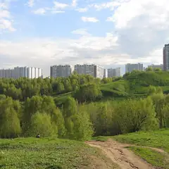
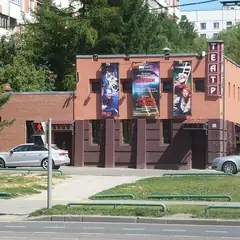
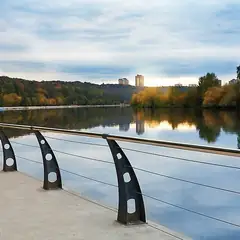
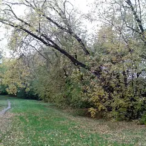
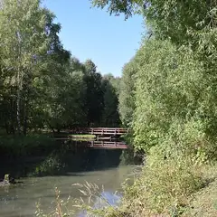

Районы · ЗАО
Куда сходить на западе Москвы
61 место на западе Москвы: 16 компьютерных клубов, 12 ресторанов и кафе, 10 развлечений и 7 мест для прогулки. Например, «Воробьёвы горы», «Канатная дорога» и «Мастерская Петра Фоменко». 30 готовых планов начинаются здесь. Больше всего мест у станций «Киевская», «Парк Победы» и «Крылатское».
- 61 место
- 30 планов
- 16 клубов
Места 40 из 45
ул. Косыгина, смотровая площадка
Лесистый склон над Москвой-рекой. У главного здания МГУ — смотровая с видом на Лужники и Сити.
Подробнее и маршрут: Воробьёвы горыПозвать сюда: Воробьёвы горы
Фото: Niklitov, CC BY-SA 4.0 · Wikimedia Commons
Воробьёвы горы — Лужники
Кабинки над Москвой-рекой от Воробьёвых гор к Лужникам — короткий полёт с видом на город.
Подробнее и маршрут: Канатная дорогаПозвать сюда: Канатная дорога
Фото: Правительство Москвы, CC BY 4.0 · Wikimedia Commons
наб. Тараса Шевченко, 29
Новое
Театр Фоменко в здании на склоне над Москвой-рекой, напротив Сити. Тёплые, лёгкие по интонации спектакли — отличный выбор для свидания; билеты лучше брать заранее.
Подробнее и маршрут: Мастерская Петра ФоменкоПозвать сюда: Мастерская Петра Фоменко
Фото: Gennady Grachev from Moscow, Russia, CC BY 2.0 · Wikimedia Commons
пл. Победы, Поклонная гора
Мемориальный парк на Поклонной горе: монумент, фонтаны, выставка военной техники.
Подробнее и маршрут: Парк ПобедыПозвать сюда: Парк Победы
Фото: Jrissman, CC BY 3.0 · Wikimedia Commons
Кутузовский просп., 38, стр. 1
Круговое полотно Рубо о Бородинском сражении на Кутузовском. Пятница — выходной.
Подробнее и маршрут: Бородинская панорамаПозвать сюда: Бородинская панорама
Фото: Alex 'Florstein' Fedorov, CC BY-SA 4.0 · Wikimedia Commons

ул. Крылатские Холмы, 14
Холмы с видом на Москву-реку и гребной канал, рядом велотрек.
Подробнее и маршрут: Крылатские холмыПозвать сюда: Крылатские холмы
Фото: A.Savin, CC BY-SA 3.0 · Wikimedia Commons
Мосфильмовская ул., 1
Экскурсии по киностудии: декорации старой Москвы, костюмы и коллекция ретроавтомобилей.
Подробнее и маршрут: МосфильмПозвать сюда: Мосфильм
Фото: stroi.mos.ru, CC BY 4.0 · Wikimedia Commons
пл. Победы, 3
Большой музей Великой Отечественной войны на Поклонной горе.
Подробнее и маршрут: Музей ПобедыПозвать сюда: Музей Победы
Фото: Jrissman, CC BY 3.0 · Wikimedia Commons

просп. Вернадского, 125
Культовый театр Валерия Беляковича в спальном районе у метро «Юго-Западная».
Подробнее и маршрут: Театр на Юго-ЗападеПозвать сюда: Театр на Юго-Западе
Фото: Dima41, CC BY-SA 3.0 · Wikimedia Commons

Большая Филёвская ул., 22
Парк на высоком берегу Москвы-реки: лестницы к воде, лес и набережная.
Подробнее и маршрут: Филёвский паркПозвать сюда: Филёвский парк
Фото: Parkfili, CC BY-SA 4.0 · Wikimedia Commons
Кутузовский просп., 2/1, стр. 1
Итальянский ресторан на 29-м этаже высотки «Украина» с видом на Москву-реку.
Подробнее и маршрут: BuonoПозвать сюда: Buono
Фото: Lite, CC BY-SA 3.0 · Wikimedia Commons

Верейская ул.
Природный заказник: река, луга и деревенские тропы прямо в городе.
Подробнее и маршрут: Долина реки СетуньПозвать сюда: Долина реки Сетунь
Фото: Kirill Borisenko, CC BY-SA 3.0 · Wikimedia Commons

Тропарёво-Никулино
Большой лес на юго-западе с прудами, лыжнёй и велодорожками.
Подробнее и маршрут: Тропарёвский лесопаркПозвать сюда: Тропарёвский лесопарк
Фото: Dzasohovich, CC BY-SA 4.0 · Wikimedia Commons
Кутузовский пр., 36А
Устрицы, рыба и морепродукты по разумным ценам, каждый день — позиция по себестоимости.
Подробнее и маршрут: Atlantica SeafoodПозвать сюда: Atlantica Seafood
Большая Филёвская ул., 22, стр. 16А
Ресторан в глубине парка «Фили» с деревянной террасой среди вековых деревьев.
ул. Маршала Тимошенко, 17, корп. 2
Новое
Спа у Крылатского с турецким хаммамом и гидромассажем: программы для двоих, спа-девичники и аренда спа-зоны под день рождения. 10–22.
Украинский бул., 15
Гастропаб Александра Раппопорта у Киевского вокзала: пиво и ностальгическая еда.
Подробнее и маршрут: Гастропаб «Бибирево»Позвать сюда: Гастропаб «Бибирево»
Кутузовский просп., 36, стр. 4
Новое
Бильярдная на Кутузовском: 22 русских стола, пул и снукер, крафтовое пиво и кухня, музыка 80–90-х. Стол — 800–1 300 ₽/ч. С 7 утра до 3 ночи.
Подробнее и маршрут: Кутузовский бильярдный клубПозвать сюда: Кутузовский бильярдный клуб
просп. Вернадского, 37, корп. 2
КруглосуточноНовое
«Мафия» в декорациях Чикаго с ведущим и падающими стульями для выбывших. Работает круглосуточно — удобно для дня рождения или большой компании.
пл. Киевского Вокзала, 1А
Новое
Мужская баня у Киевского вокзала: 3 часа с аромапарениями от 4 000 ₽, кабинеты «Золото», «Серебро», «Медь» для своей компании и VIP-шале. По средам — шахматы.
Большая Филёвская ул., 22 (парк «Фили»)
Новое
Девять трасс среди высоких деревьев Филёвского парка, самая высокая — 22 м с видом на Москву-реку, есть зиплайн. 10:00–18:00, касса до 17:00, в дождь закрыто.
Подробнее и маршрут: ПандаПарк ФилиПозвать сюда: ПандаПарк Фили
Кутузовский просп., 21
Новое
Любимый кинотеатр киноманов: фестивальное и авторское кино, почти всё на языке оригинала с субтитрами. До сеанса — книжный и кафе прямо в здании.
Ярцевская ул., 19 (4 этаж)
Новое
Командные экшн-игры у «Молодёжной»: «Игра в кальмара» с ведущим-актёром, «Бомбермен», «Выжить во тьме», «Форт Боярд». Для весёлой компании.
Ленинский просп., 108, стр. 1
Новое
Фермерский рынок с фудкортом: внизу прилавки и винотека, наверху большая терраса, где летом ставят юрты. Можно долго сидеть компанией, открыт до 23:00.
Подробнее и маршрут: Рынок на ЛенинскомПозвать сюда: Рынок на Ленинском
причал у гостиницы «Украина», Кутузовский пр., 2/1
Круиз по Москве-реке круглый год, с ужином на борту: около 2,5 часа, билет от 2 700 ₽.
Подробнее и маршрут: Флотилия RadissonПозвать сюда: Флотилия Radisson
причал «Гостиница Украина»
Белоснежная яхта-ресторан флотилии «Рэдиссон»: морепродукты и прогулка по Москве-реке круглый год. Отправление от причала у гостиницы «Украина».
Кутузовский просп., 2/1, стр. 6
Новое
Премиальное караоке у Киевской: сцена, бэк-вокалистки и звукорежиссёр, который подстроит микрофон. С вс по чт без депозита, в выходные — бронь стола. 20:00–6:00.
Осенний бул., 8А
Ресторан, где платишь за вход, а еду берёшь без наценки; большой зал в Крылатском.
Подробнее и маршрут: True Cost ОсеннийПозвать сюда: True Cost Осенний
Очаковское ш., 40
КруглосуточноНовое
11 срубов на дровах на 6–15 человек: травяные купели, мангал с беседкой у бассейна и зал с камином, где накроют стол. Круглосуточно, от 6 000 ₽ в час.
Подробнее и маршрут: Банный двор в ОчаковоПозвать сюда: Банный двор в Очаково
ул. 1812 года, 18
Банный клуб у Кутузовского: парение, бассейны и отдых компанией.
Кутузовский пр., 2/1, стр. 1
Коктейльный бар на 31 этаже гостиницы «Украина» (бывший Mercedes Bar). 18–06.
Кутузовский просп., 2/1, стр. 6
Русская кухня у гостиницы «Украина» с фестивалями борща.
Большая Очаковская ул., 35
Новое
Бани 1947 года, восстановленные по старым чертежам в 2020-м: два высших разряда, женские дни, шесть VIP-кабинетов и тематические сауны. Вход от 1 300 ₽.
Подробнее и маршрут: Очаковские баниПозвать сюда: Очаковские бани
2-й Сетуньский пр., 1
Новое
Иммерсивный перформанс в «волшебном театре»: маски, костюмы, актёры играют с полной отдачей, а загадки вплетены прямо в сюжет. Лучше компанией.
Подробнее и маршрут: П.И.Р. Театр ЗолтанаПозвать сюда: П.И.Р. Театр Золтана
просп. Вернадского, 86В
Новое
Большой фудхолл у метро «Юго-Западная»: корейская, индийская, грузинская кухни и бургеры в одном зале. В пятницу и субботу работает до полуночи.
Багратионовский пр., 12
Новое
Бани 1934 года у «Филей»: безлимит в мужском отделении — 3 000–3 500 ₽, женское работает по выходным, кабинет на 4 гостей — 5 000 ₽ за 3 часа.
Подробнее и маршрут: Покровские баниПозвать сюда: Покровские бани
Ярцевская ул., 22, стр. 1
Новое
Ирландский паб сети Harat’s в пяти минутах от «Молодёжной», на втором этаже отдельного здания: футбол на экранах, концерты по вечерам, бильярд.
Подробнее и маршрут: Harat's Pub на МолодёжнойПозвать сюда: Harat's Pub на Молодёжной
Новозаводская ул., 27
Новое
Ночные автоквесты: командами на машинах колесите по Москве и разгадываете загадки на точках. Отличный повод для компании автомобилистов, расписание — на сайте.
Мичуринский просп., 22, корп. 1
Современная восточная кухня на юго-западе; по выходным — большие бранчи.
ул. Косыгина, 28, стр. 1
Панорамный клуб на Воробьёвых горах: вечеринки до рассвета с видом на город.


Готовые планы 18 из 30
- Пионер · Кинотеатр · м. Выставочная
- 12 минут пешкомBamboo.Bar · Ресторан с террасой
Фестивальное кино на языке оригинала в «Пионере» на Кутузовском, а после сеанса — по мосту «Багратион» в Сити, ужинать на террасе Bamboo.Bar среди небоскрёбов.
Открыть план: Кино в «Пионере» и терраса в СитиПозвать сюда: Кино в «Пионере» и терраса в Сити
Фото: BpbAlonka, CC BY-SA 3.0 · Wikimedia Commons
- Мастерская Петра Фоменко · Театр · м. Москва-Сити
- 12 минут пешкомSixty · Панорамный ресторан
Тёплый спектакль в Мастерской Фоменко на склоне над рекой, а потом по мосту «Багратион» в Сити — ужин на 62-м этаже «Федерации», когда башни уже светятся.
Открыть план: Фоменко и ужин над СитиПозвать сюда: Фоменко и ужин над Сити
Фото: Gennady Grachev from Moscow, Russia, CC BY 2.0 · Wikimedia Commons
- Бородинская панорама · Музей · м. Парк Победы
- 2 минуты пешкомAtlantica Seafood · Рыбный ресторан
Сначала круговое полотно Рубо о Бородинском сражении, а потом устрицы и рыба в Atlantica в двух минутах пешком. Учтите: по пятницам панорама закрыта.
Открыть план: Бородино и морепродуктыПозвать сюда: Бородино и морепродукты
Фото: Alex 'Florstein' Fedorov, CC BY-SA 4.0 · Wikimedia Commons
- Воробьёвы горы · Парк и смотровая · м. Воробьёвы горы
- 8 минут пешкомКанатная дорога · Канатная дорога
Пешком по жёлтым склонам Воробьёвых гор, потом кабинка над рекой в Лужники.
Открыть план: Канатка над осенним лесомПозвать сюда: Канатка над осенним лесом
Фото: Niklitov, CC BY-SA 4.0 · Wikimedia Commons
- Парк Победы · Парк · м. Парк Победы
- 5 минут пешкомColizeum Парк Победы · Компьютерный клуб
Прогулка по Парку Победы к монументу и выставке военной техники на закате, а через пять минут VIP-буткемп ровно на пятерых и три PS5.
Открыть план: Поклонка на закате и буткемпПозвать сюда: Поклонка на закате и буткемп
Фото: Jrissman, CC BY 3.0 · Wikimedia Commons
- Парк Победы · Парк · м. Парк Победы
- 14 минут пешкомМузей Победы · Музей
Парк Победы, выставка техники под открытым небом и большой музей войны.
Открыть план: Поклонная гораПозвать сюда: Поклонная гора
Фото: Jrissman, CC BY 3.0 · Wikimedia Commons
- Воробьёвы горы · Парк и смотровая · м. Воробьёвы горы
- 8 минут пешкомКанатная дорога · Канатная дорога
Прогулка по жёлтым склонам Воробьёвых гор к смотровой у МГУ на закате, а потом кабинка канатной дороги над рекой — город в огнях под ногами.
Открыть план: Склоны в листьях и канаткаПозвать сюда: Склоны в листьях и канатка
Фото: Niklitov, CC BY-SA 4.0 · Wikimedia Commons
- Филёвский парк · Парк · м. Филёвский парк
- 4 минуты пешкомFO’X · Ресторан в парке
Лестницы к Москве-реке в Филях и обед в FO’X в глубине парка — в тёплый сезон на деревянной террасе среди деревьев.
Открыть план: Фили и ресторан в паркеПозвать сюда: Фили и ресторан в парке
Фото: Parkfili, CC BY-SA 4.0 · Wikimedia Commons
- Крылатские холмы · Парк · м. Крылатское
- 16 минут пешкомTrue Cost Осенний · Ресторан
Закат на Крылатских холмах с видом на Москву-реку и гребной канал, а потом ужин в True Cost: платишь за вход, а еду берёшь без наценки.
Открыть план: Холмы и ужин без наценкиПозвать сюда: Холмы и ужин без наценки
Фото: A.Savin, CC BY-SA 3.0 · Wikimedia Commons
- Матрёшка · Ресторан русской кухни · м. Киевская
- 1 минута пешкомGrammy's · Караоке-клуб
Русская кухня в «Матрёшке» у высотки «Украина», а рядом Grammy’s: бэк-вокалистки, звукорежиссёр подстроит микрофон, а с воскресенья по четверг — без депозита.
Открыть план: Борщ у «Украины» и премиальное караокеПозвать сюда: Борщ у «Украины» и премиальное караоке
- Огниво · Мужская баня · м. Киевская
- 8 минут пешкомГастропаб «Бибирево» · Гастропаб
Три часа с аромапарениями в мужской бане «Огниво» у Киевского вокзала — для компании есть кабинеты, — а потом гастропаб «Бибирево» Раппопорта на Украинском бульваре.
Открыть план: Мужская баня и гастропаб у КиевскогоПозвать сюда: Мужская баня и гастропаб у Киевского
- Театр на Юго-Западе · Театр · м. Юго-Западная
Культовый театр Валерия Беляковича в спальном районе.
Открыть план: Театр на Юго-ЗападеПозвать сюда: Театр на Юго-Западе
Фото: Dima41, CC BY-SA 3.0 · Wikimedia Commons
- ПандаПарк Фили · Верёвочный парк · м. Терехово
- 14 минут пешкомFO’X · Ресторан в парке
Девять верёвочных трасс среди высоких деревьев Филёвского парка — с самой высокой, 22 метра, видно реку, — а потом ужин на деревянной террасе FO’X в глубине парка. В дождь трассы закрыты.
Открыть план: Трассы над Москвой-рекой и ужин в паркеПозвать сюда: Трассы над Москвой-рекой и ужин в парке
- Atlantica Seafood · Рыбный ресторан · м. Парк Победы
- 3 минуты пешкомКутузовский бильярдный клуб · Бильярдный клуб
Устрицы и рыба по разумным ценам в Atlantica Seafood, а в соседнем доме — 22 русских стола, пул и снукер под музыку 80–90-х, открыто до 3 ночи.
Открыть план: Устрицы и бильярд до 3 ночиПозвать сюда: Устрицы и бильярд до 3 ночи
- Мосфильм · Киностудия · м. Парк Победы
Декорации старой Москвы и коллекция ретроавтомобилей киностудии.
Открыть план: Экскурсия по «Мосфильму»Позвать сюда: Экскурсия по «Мосфильму»
Фото: stroi.mos.ru, CC BY 4.0 · Wikimedia Commons
- Colizeum Парк Победы · Компьютерный клуб · м. Парк Победы
- 10 минут пешкомAtlantica Seafood · Рыбный ресторан
VIP-буткемп на пятерых и три PS5: своя комната без свидетелей, а потом устрицы, рыба и морепродукты в Atlantica в десяти минутах.
Открыть план: Девчачий буткемпПозвать сюда: Девчачий буткемп
- Киберцентр ТТ · Компьютерный клуб · м. Ломоносовский проспект
- 15 минут пешкомULLU · Восточный ресторан
Клуб на Мичуринском, а через 15 минут — современная восточная кухня в ULLU.
Открыть план: Катка в Раменках и восточная кухняПозвать сюда: Катка в Раменках и восточная кухня
- Colizeum Киевская · Компьютерный клуб · м. Киевская
- 7 минут пешкомГастропаб «Бибирево» · Гастропаб
Пара часов в Colizeum у Киевского вокзала, а потом гастропаб «Бибирево» Раппопорта на Украинском бульваре — пиво и ностальгическая еда.
Открыть план: Киевская: катка и гастропабПозвать сюда: Киевская: катка и гастропаб

Компьютерные клубы 10 из 16
ул. Генерала Ермолова, 4
Круглосуточно
Три PS5 и VIP-буткемп на пятерых — как раз на пачку. Круглосуточно.
Подробнее и маршрут: Colizeum Парк ПобедыПозвать сюда: Colizeum Парк Победы
Киевская ул., 2 (1 этаж)
Клуб в паре минут от Киевского вокзала: общий зал, буткемпы и консоли.
Подробнее и маршрут: Colizeum КиевскаяПозвать сюда: Colizeum Киевская
Осенний бул., 10 (ТЦ «Бульвар», 2 этаж)
Большой клуб в ТЦ «Бульвар»: общий зал на RTX 5060, зона Ultra на RTX 5070, буткемп на RTX 5070 Ti и две PlayStation 5.
Подробнее и маршрут: Colizeum КрылатскоеПозвать сюда: Colizeum Крылатское
пл. Джавахарлала Неру, 1 (ТЦ «Универ Сити»)
Круглосуточно
Круглосуточный клуб в ТЦ «Универ Сити» у метро «Университет», с баром напитков.
Подробнее и маршрут: Colizeum УниверситетПозвать сюда: Colizeum Университет
ул. Барклая, 10А (ТЦ «Фили», цокольный этаж)
Круглосуточно
Круглосуточный клуб в двухстах метрах от «Багратионовской».
Подробнее и маршрут: Colizeum ФилиПозвать сюда: Colizeum Фили
Мичуринский просп., 26
Клуб в Раменках, недалеко от МГУ.
Подробнее и маршрут: Киберцентр ТТПозвать сюда: Киберцентр ТТ
просп. Вернадского, 56
Клуб на проспекте Вернадского с компами на RTX 5070, буткемпами и консолями.
Подробнее и маршрут: Colizeum ВернадскогоПозвать сюда: Colizeum Вернадского
Кастанаевская ул., 65
Новый клуб сети на Кастанаевской: игровые ПК, VIP-буткемпы, PlayStation 5 с диванами и безалкогольный бар с горячей едой.
Подробнее и маршрут: Colizeum КастанаевскаяПозвать сюда: Colizeum Кастанаевская
Боровское ш., 50
Круглосуточно
Круглосуточный клуб на Боровском шоссе.
Подробнее и маршрут: Colizeum НовопеределкиноПозвать сюда: Colizeum Новопеределкино
Мичуринский просп., 58, корп. 1
35 ПК на RTX 3060 с мониторами 280 Гц, два буткемпа, две PlayStation 5 и кресла DxRacer.
Подробнее и маршрут: Colizeum РаменкиПозвать сюда: Colizeum Раменки
Как позвать
- Выбери план, место или событие — в карточке адрес, цены и маршрут в Яндекс Картах.
- Нажми «Позвать сюда» — соберётся приглашение-игра для свидания или голосование для компании.
- Отправь ссылку в любой мессенджер: тебе ответят, а компания отметит, куда и когда может. Бесплатно и без регистрации.